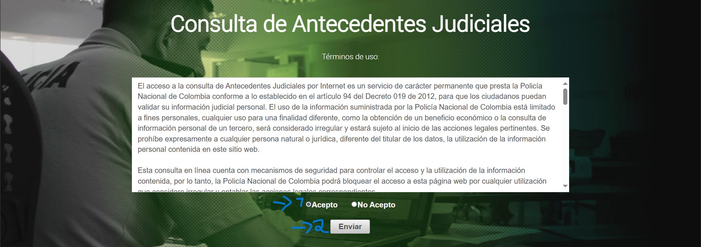
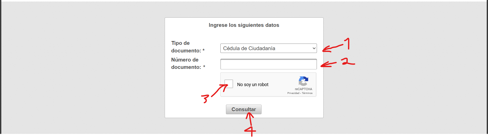
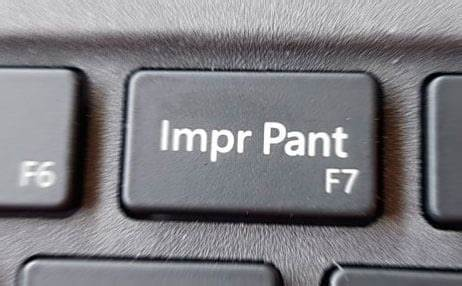
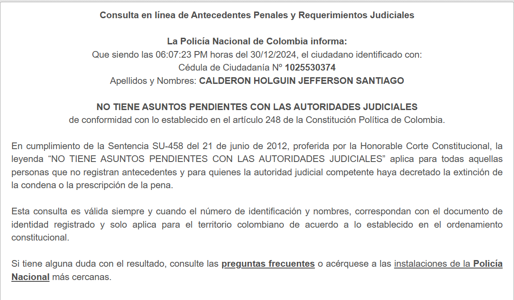
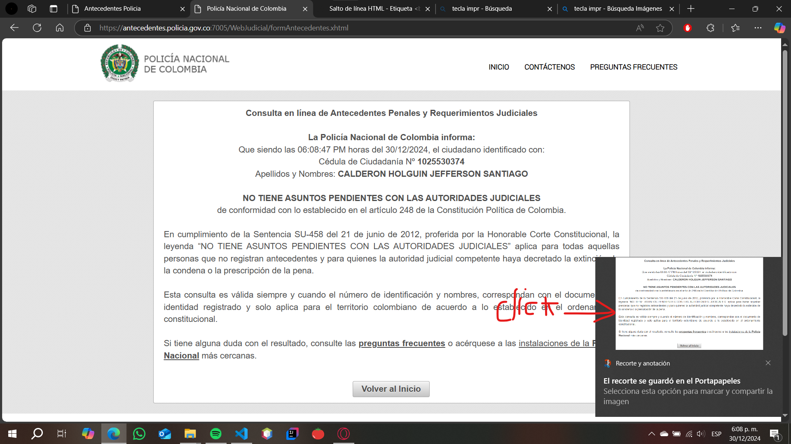
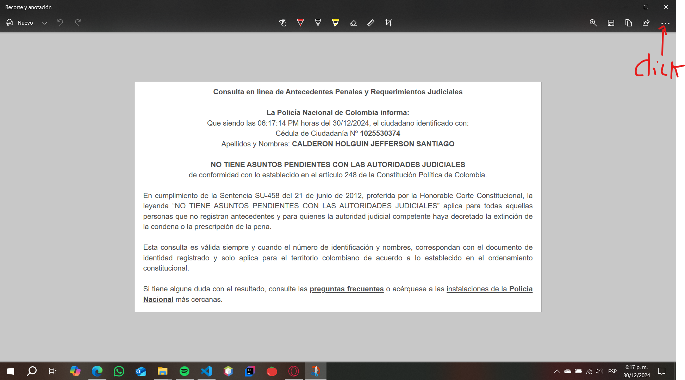
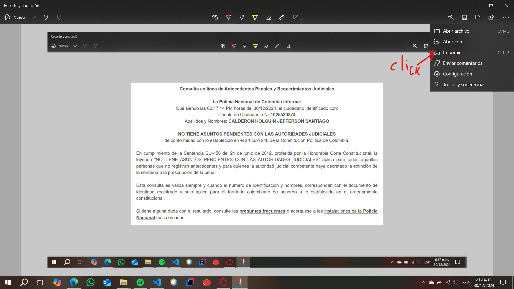
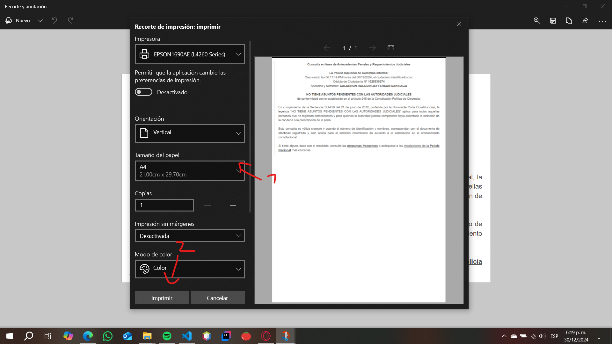

Instrucciones
-
Paso 1
Abre la página https://antecedentes.policia.gov.co:7005/WebJudicial/index.xhtml.
-
Paso 2
Haz click en "Acepto" y después en el botón "Enviar".
 -
Paso 3
Selecciona el tipo de documento del cliente, ingresa el número de documento, marca el cuadro y haz click en "consultar".
 -
Paso 4
Toma una captura de pantalla con la tecla "Impr pant" del teclado.
 -
Paso 5
Selecciona en pantalla el cuadro donde aparecen los datos.
 -
Paso 6
Después de tomar la captura de pantalla, haz click en el cuadro que aparece.
 -
Paso 7
Haz click en los tres puntos que aparecen.
 -
Paso 8
Haz click en "imprimir".
 -
Paso 9
Selecciona el tipo de papel y haz click en "imprimir".
